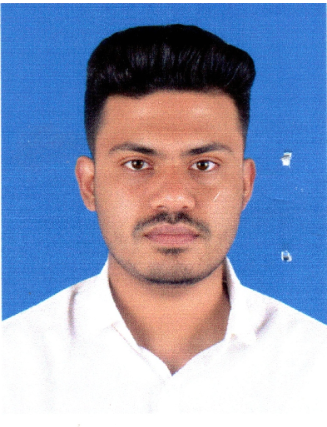

To obtain a Web Developer position where I can use my skills in HTML, CSS, JavaScript, and modern frameworks to build responsive, user-friendly web applications while continuously improving my technical expertise.
Name: Md. Mushtak Tahmid Tasin.
Profession: Student.
Father’s Name: Md Rafiqul Islam.
Profession: Retired training officer in RERMP project, LGED.
Mother’s Name: Mst. Meshkat Jahan.
Profession: Accountant, LGED.
Present Address: Bashundhara R/A.
Permanent Address: Hakimpur, Chaugachha, Jashore.
Age: 21
Marital Status: Single.
Religious: Islam.
Date of Birth: 20 October, 2004.
1. Bachelor of Science (BSc) (Current)
CGPA: 3.34
Credit Completed: 94
Semester: 9th.
Department: Computer Science & Engineering.
American International University-Bangladesh.
2. Higher Secondary Certificate (HSC)
GPA: 5.00
Background: Science.
Passing Year: 2022
S.M. Habibur Rahaman Pouro Degree College.
Chaugachha, Jashore.
3. Secondary School Certificate (SSC)
GPA: 4.50
Background: Science.
Passing Year: 2020
Chaugachha Shahadat Pilot Model Govt. High School.
Chaugachha, Jashore.
1. Desktop Application Development with .NET & Java.
2. Strong programming knowledge with C++, java and C#.
3. Strong Problem solving knowledge.
4. Clear concept of object oriented programming.
5. Familiar with version control system. (git and github)
1. Solved 100+ problems in Codeforces.
2. Ranked under top 50 at Intra AIUB Programming Contest 2024 among 500+ participants.